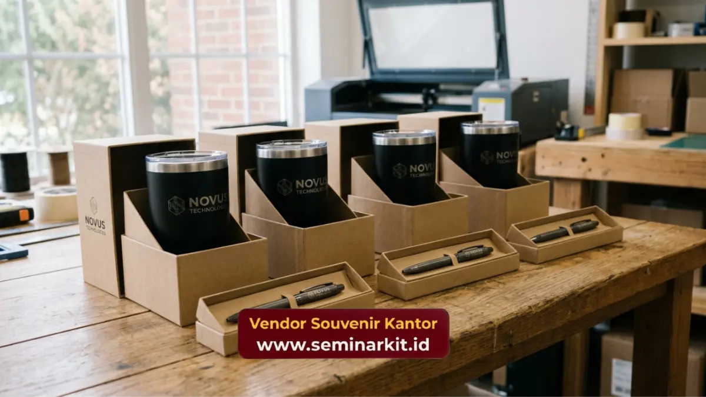

Souvenir untuk klien custom logo adalah cinderamata korporat yang dicetak dengan identitas visual perusahaan, seperti logo, warna merek, dan tagline, agar setiap produk berfungsi ganda sebagai media branding sekaligus bentuk apresiasi kepada klien. Proses custom logo yang presisi menjadi faktor utama keberhasilan strategi ini.
- Custom logo pada souvenir memperkuat brand recall setiap kali produk digunakan oleh klien.
- Teknik cetak seperti laser engraving, emboss, dan cetak UV menghasilkan tampilan logo yang lebih tahan lama.
- Pemilihan teknik cetak logo disesuaikan dengan jenis material produk agar hasil optimal.
- Proses pemesanan custom logo umumnya meliputi konsultasi desain, approval sampel, dan produksi massal.
- Konsistensi warna dan proporsi logo penting agar identitas merek tetap terjaga di setiap produk.
Mengapa Custom Logo Penting pada Souvenir untuk Klien?
Custom logo penting pada souvenir untuk klien karena mengubah produk generik menjadi media branding yang secara konsisten mengingatkan klien pada perusahaan setiap kali produk tersebut digunakan.
Tanpa elemen custom logo, souvenir hanya berfungsi sebagai barang pemberian biasa tanpa nilai tambah branding.
Sebaliknya, souvenir dengan logo yang tercetak rapi dapat menjadi pengingat visual berulang, terutama pada produk dengan frekuensi penggunaan tinggi seperti drinkware atau alat tulis harian.
Selain memperkuat pengenalan merek, custom logo juga mencerminkan tingkat profesionalisme perusahaan.
Detail kecil seperti kerapian hasil cetak logo turut memengaruhi persepsi klien terhadap standar kualitas kerja perusahaan secara keseluruhan.
Teknik Cetak Apa yang Cocok untuk Souvenir Custom Logo?
Teknik cetak yang cocok untuk souvenir custom logo bergantung pada jenis material produk, karena setiap material memiliki karakteristik permukaan yang memengaruhi hasil akhir cetakan.
Laser engraving cocok digunakan pada material metal atau kayu karena menghasilkan tampilan logo yang terukir permanen dan tahan lama tanpa risiko pudar.
Emboss atau deboss ideal untuk material kulit sintetis seperti notebook atau organizer, karena memberikan tekstur timbul yang terasa premium saat disentuh.
Cetak sablon atau screen printing umum digunakan pada produk berbahan kain atau plastik, cocok untuk kebutuhan produksi dengan jumlah besar dan anggaran lebih terjangkau.
Cetak UV atau digital printing sesuai untuk material kaca, keramik, atau akrilik karena mampu mencetak detail warna logo secara presisi termasuk pada desain yang kompleks.
Pemilihan teknik cetak yang tepat memastikan logo perusahaan tampil optimal sekaligus tahan lama pada produk yang digunakan klien sehari-hari.

Bagaimana Tahapan Proses Pemesanan Souvenir Custom Logo untuk Klien?
Tahapan proses pemesanan souvenir custom logo untuk klien umumnya dimulai dari konsultasi kebutuhan, dilanjutkan dengan proses desain, approval sampel, hingga produksi massal sesuai jumlah pesanan.
Alur umum yang diterapkan meliputi:
- Konsultasi kebutuhan produk, jumlah pesanan, dan anggaran perusahaan.
- Penentuan jenis produk dan teknik cetak logo yang paling sesuai.
- Proses desain awal yang disesuaikan dengan identitas visual perusahaan.
- Pembuatan sampel produk untuk memastikan kualitas hasil cetak sebelum produksi massal.
- Produksi dalam jumlah besar setelah sampel disetujui oleh pihak perusahaan.
- Pengemasan dan pengiriman produk sesuai jadwal acara yang telah ditentukan.
Tahapan ini membantu memastikan hasil akhir souvenir sesuai ekspektasi sebelum diproduksi dalam jumlah besar untuk keperluan klien.
Apa yang Perlu Diperhatikan agar Identitas Merek Tetap Konsisten?
Identitas merek tetap konsisten pada souvenir custom logo apabila perusahaan memperhatikan kesesuaian warna, proporsi logo, dan gaya desain di setiap jenis produk yang diproduksi.
Beberapa hal yang perlu diperhatikan meliputi penggunaan kode warna resmi perusahaan agar warna logo tidak berbeda antar produk.
Penempatan logo pada posisi yang proporsional agar tidak mengganggu fungsi utama produk,serta penggunaan panduan desain atau brand guideline perusahaan sebagai acuan tim produksi.
Konsistensi ini penting terutama ketika perusahaan memesan beberapa jenis souvenir sekaligus dalam satu paket untuk klien.
Untuk mewujudkan souvenir untuk klien custom logo yang presisi dan mencerminkan identitas merek perusahaan Anda, konsultasikan kebutuhan desain dan produksi bersama vendorsouvenirkantor.web.id.
Souvenir untuk klien custom logo merupakan strategi branding efektif yang memperkuat pengenalan merek melalui produk fungsional yang digunakan klien sehari-hari. Pemilihan teknik cetak yang sesuai material, proses approval yang teliti, serta konsistensi identitas visual menjadi faktor penentu keberhasilan strategi ini.

Banner promosi: klik gambar untuk langsung terhubung ke WhatsApp tim sales.